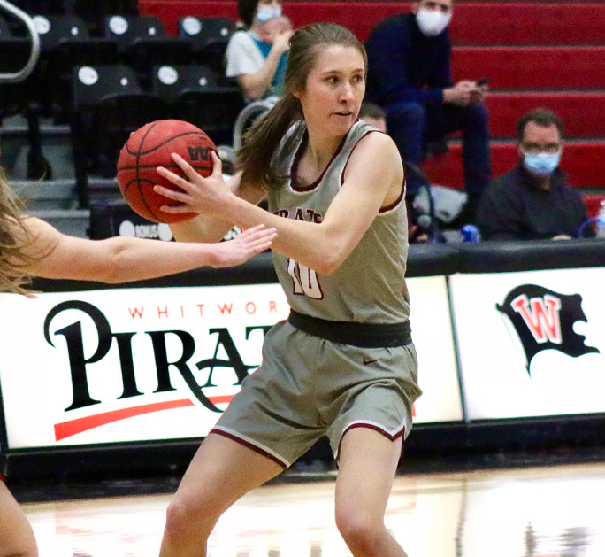
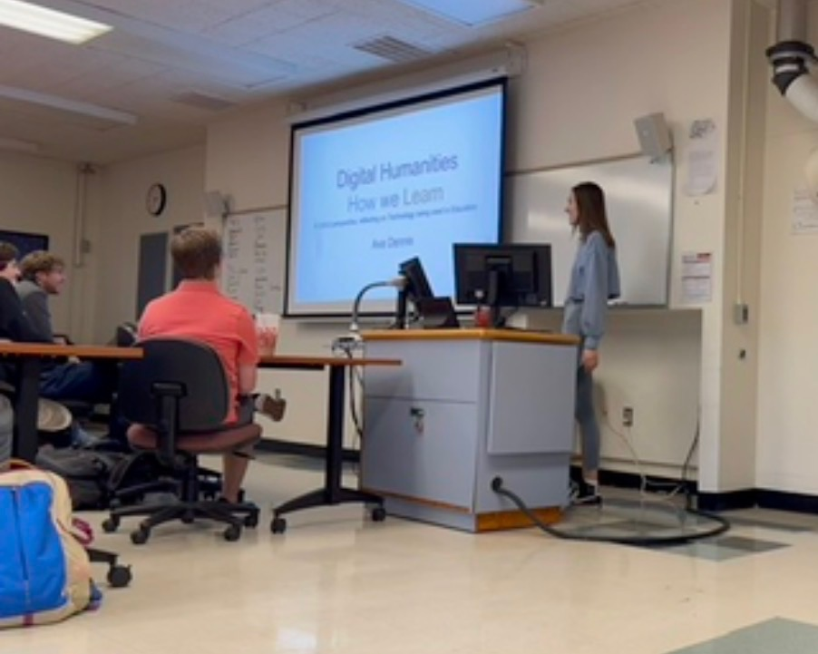
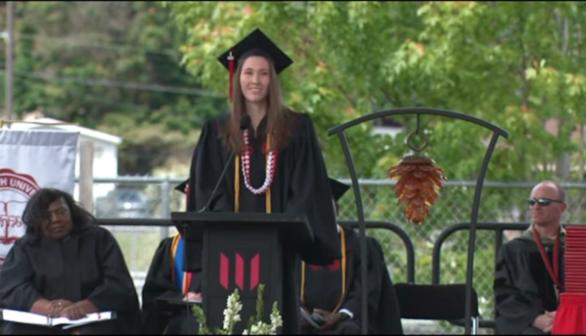
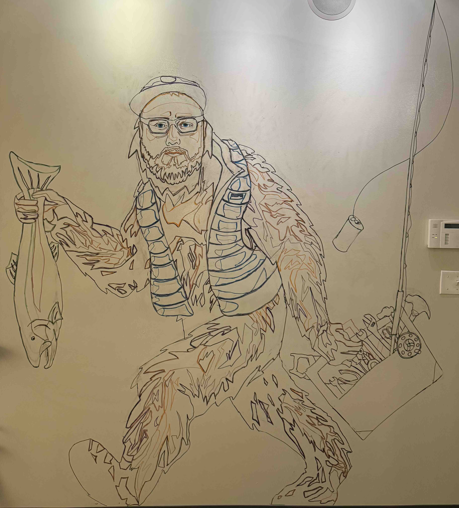
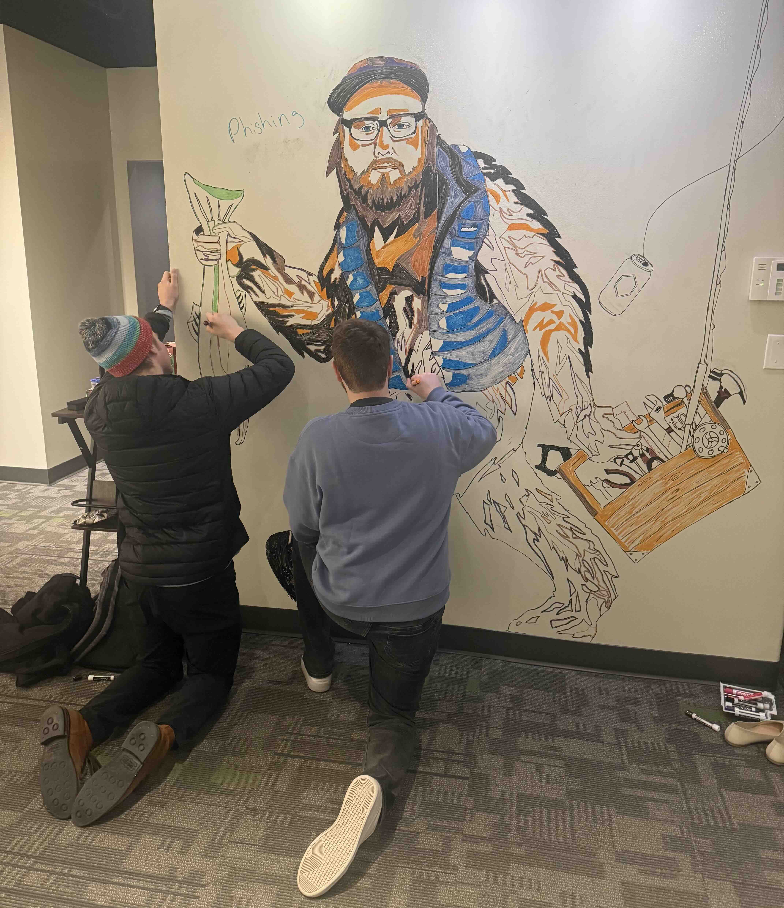
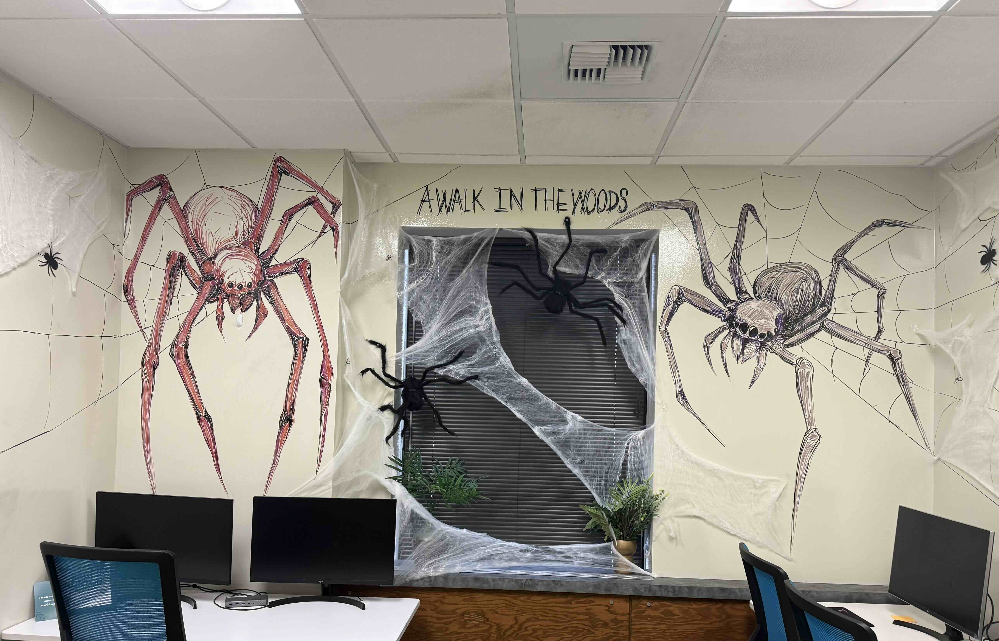
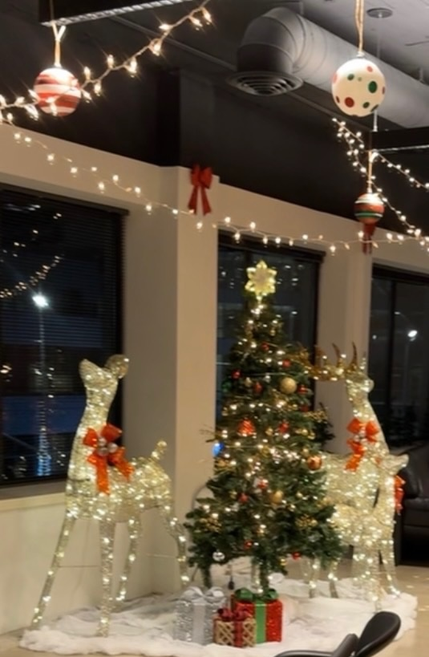

Digital Deck
Real-time multiplayer card game. Players join by session code, and a Spring Boot server controls the deck so no client can see the shuffle or another player's hand.
Software Engineer · Spokane, WA · Open to remote
Full-stack engineer with a Computer Science degree in Human-Computer Interaction from Whitworth University and a year of production frontend work. I build real-time apps, serverless tools, and interfaces people enjoy using.
Real-time multiplayer card game. Players join by session code, and a Spring Boot server controls the deck so no client can see the shuffle or another player's hand.
Serverless monitor that checks sites every 5 minutes, logs response-time metrics to CloudWatch, and sends email alerts through SNS when a site is down or slow.
Deployed full-stack tracker with a Node.js/Express API on Render, a PostgreSQL database on Neon, LiveCoinWatch data, and a React frontend on Netlify.
Searchable directory of frontend resources with multi-criteria filters, list and card views, sorting, and pagination. Demoed to stakeholders as an internal dev resource.
A short overview of the impact I've made as a person.

Since high school, I had set my mind on playing college basketball and dedicated countless hours of hard work and training to making that goal a reality. My determination paid off when I was recruited to play at Whitworth University, where I also pursued my degree in Human-Computer Interaction. Being part of a team taught me that success isn't just about individual accomplishments, but about the impact you have on those around you. Basketball strengthened my appreciation for teamwork, encouraged me to support and uplift others, and showed me the value of contributing to something bigger than myself. These are lessons I continue to carry into my career and the communities I'm part of.

During my Human-Computer Interaction studies at Whitworth University, I spent a semester researching the limitations of Blackboard and advocating for a better learning experience for students and professors. Through surveys, conversations with students and faculty, and presentations, I gathered feedback and demonstrated how transitioning to Canvas could improve the university's learning environment. My findings led to an invitation to present directly to faculty and participate in discussions about the transition. With the next couple years, Whitworth adopted Canvas, and I was told my research helped influence that decision. It was rewarding to see how research, advocacy, and a commitment to improving user experiences could contribute to meaningful change across my university.
I was honored to be nominated to deliver the commencement speech at Whitworth University. It was one of the most rewarding experiences of my college journey, giving me the opportunity to reflect on my growth, share the lessons I had learned, and speak to thousands of graduates, faculty, friends, and families. Being able to represent my graduating class and share a message that could inspire and encourage others was an unforgettable experience. It was a meaningful way to close one chapter of my life while celebrating the community that had shaped me along the way.
You can watch my commencement speech on my LinkedIn post!



No matter my role, I always look for ways to make a positive impact on the community around me. I believe that even small acts of creativity and kindness can make a meaningful difference in someone's day. At Corporate Tools, one way I brought that mindset into the workplace was by spending time after hours drawing our company mascots on the office whiteboard walls for everyone to enjoy. What began as a fun, personal project became an opportunity to brighten our shared workspace and bring a little more personality into the office. I wanted to create something that would make my coworkers smile, spark conversations, and help make the workplace feel like more than just a place to work. For me, contributing to a positive team culture is just as meaningful as the work I do behind a computer screen.
What started as a small creative project during breaks and after work soon became something my coworkers wanted to be part of. After I outlined the drawings, others began joining in during their breaks to fill in the designs, add their own touches, and contribute to the artwork. It was rewarding to see something I started bring people together in such a natural and unexpected way. What began as a simple effort to brighten the office turned into a shared experience that encouraged creativity, collaboration, and connection among coworkers. It reminded me that making a positive impact doesn't always require a grand gesture. Sometimes, it's the little things that help build a stronger sense of community.


I also had the opportunity to contribute to company celebrations, including our Halloween decorating competition and annual Christmas party. I was asked to help bring these events to life because my coworkers and leadership knew I was someone who would put in the time, effort, and creativity to make them special. While these were long nights, I genuinely enjoyed putting in the effort to create memorable experiences for others.
To me, making an impact isn't limited to the responsibilities in my job description. It's also about being someone others can count on, taking initiative, and helping create an environment where people feel connected and appreciated.
Making a positive impact on the people around me is something I strive for both inside and outside the workplace. I believe that being part of a community means more than simply showing up; it means finding ways to contribute, encourage others, and build meaningful connections. Over the past year, I've become involved in my local rock climbing community, where I've continued to challenge myself, connect with others, and grow. I'm hoping to take that passion a step further by competing this winter. Wherever life takes me, I want to continue finding ways to make the communities I'm part of a little better.